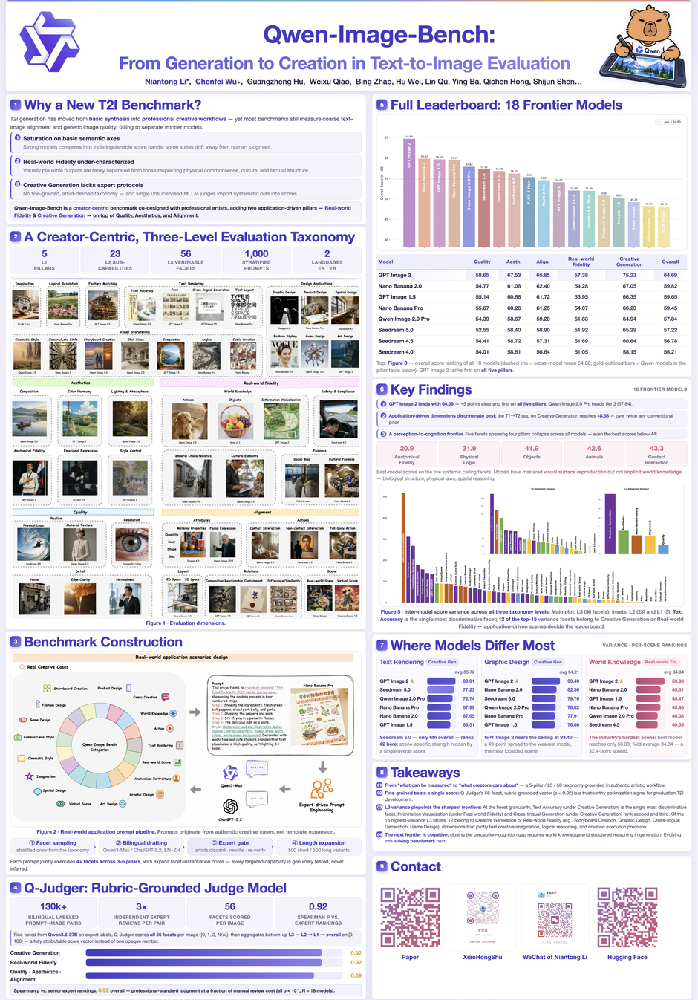
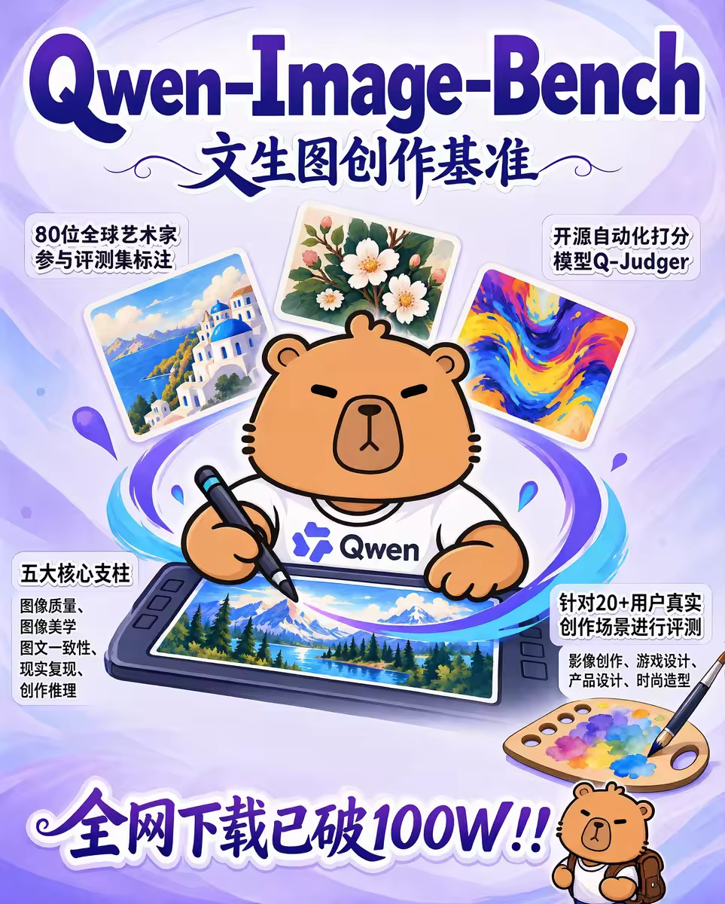
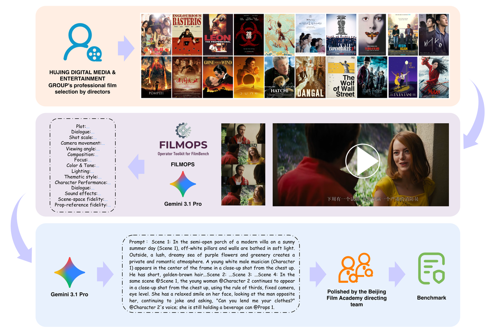

01
Qwen-Image-Bench
From Generation to Creation in Text-to-Image Generation
The first comprehensive creator-oriented benchmark for image generation, built with 80+ experts across film, design and art.
Multimodal AI × Creative Evaluation
I’m Niantong Li (Natalia), a multimodal model data and evaluation researcher trained at Central Saint Martins, with four years of moving-image practice and three years in art and design. I currently work at Alibaba with the Qwen team, focusing on data training and evaluation for multimodal models.
My work sits at the intersection of creation and technology: translating aesthetics, narrative, cinematography and style into clear evaluation standards and actionable data strategies. I’m committed to turning artists’ professional judgment into capabilities that models can learn, measure and continuously improve.
01 / SELECTED RESEARCH
From Generation to Creation in Text-to-Image Generation
The first comprehensive creator-oriented benchmark for image generation, built with 80+ experts across film, design and art.
A Film-Grade Benchmark for Cinematic Video Generation
A film-industry benchmark evaluating camera movement, shot scale, performance, effects, lighting and sound in generated video.
Omni-capable Image Generation Foundation Model
Core contributor to the Qwen-Image-2.0 technical report, supporting a new foundation model that unifies high-fidelity generation and precise image editing.
02 / QWEN-IMAGE-BENCH
From generation to creation — the first comprehensive creator-centric benchmark for text-to-image generation, designed with 80+ professional artists across film, design and art.


03 / FILMBENCH
A Film-Production-Grade Video Generation Benchmark
Prof. Qi Hong’s Directing Team, Beijing Film Academy × Hujing Moku Lab × Xiaotian Hengyu
As AI video generation models enter professional film production — with AI-made short dramas reaching even the Cannes stage — how should we evaluate a model’s real filmmaking capability?
Most existing benchmarks remain limited to basic motion coherence and simple prompt alignment. Yet in real production, a model needs cinematic language aesthetics, rigorous spatio-temporal logic, and precise character performance control.
FilmBench is a film-production-grade benchmark measuring the true creative level of video models under industry standards, featuring 35 fine-grained cinematic checkpoints and an open-source automated evaluation agent.

Every prompt is derived from a ground-truth shot in a curated library of real films.
Sourced from 307 films across 20 genres, covering global film cultures.
600+ multi-shot cores expanding to about 2,400 shot groups.
Dimensions rooted in film-academy cinematic language, vetted by top directors.
Film-expert agent scores each L3 sub-metric independently (ρ=0.92).
Per-metric scoring → weakness localisation → bottleneck findings → training-data guidance.
04 / EXPERIENCE
Building a continuous loop across evaluation, model diagnosis and targeted data supply.
Led the evaluation–diagnosis–data loop to continuously advance the foundation model.
Built text-to-image and image-editing evaluation systems supporting Seedream iterations.
05 / EDUCATION
University of the Arts London · Master's Degree
LET’S CREATE WHAT’S NEXT